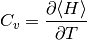

IPT Hysteresis Energy analysis¶
To study the stability of the solutions in the coexistence region
from __future__ import division, absolute_import, print_function
from dmft.common import greenF, tau_wn_setup
from dmft.ipt_imag import dmft_loop, n_half, ekin, epot, ekin_tau
from math import log
from mpl_toolkits.axes_grid1.inset_locator import mark_inset
from mpl_toolkits.axes_grid1.inset_locator import zoomed_inset_axes
from scipy.integrate import quad
from scipy.integrate import simps
from scipy.optimize import fsolve
import matplotlib.pylab as plt
import numpy as np
import slaveparticles.quantum.dos as dos
Total energy¶
One uses the formula for the Kinetic Energy and Potential energy and adds them up.
def hysteresis(beta, u_range):
log_g_sig = []
tau, w_n = tau_wn_setup(dict(BETA=beta, N_MATSUBARA=max(6 * beta, 256)))
g_iwn = greenF(w_n)
for u_int in u_range:
g_iwn, sigma = dmft_loop(u_int, 0.5, g_iwn, w_n, tau)
log_g_sig.append((g_iwn, sigma))
return log_g_sig, w_n, tau
def energy(beta, u_range, g_s_results):
g_s_iw_log, w_n, tau = g_s_results
g_iwfree = greenF(w_n)
mu = fsolve(n_half, 0., beta)[0]
e_mean = quad(dos.bethe_fermi_ene, -1., 1., args=(1., mu, 0.5, beta))[0]
kin = np.asarray([ekin(g_iw, s_iw, beta, w_n, e_mean, g_iwfree)
for g_iw, s_iw in g_s_iw_log])
pot = np.asarray([epot(g_iw, s_iw, u, beta, w_n)
for (g_iw, s_iw), u in zip(g_s_iw_log, u_range)])
return kin, pot
U = np.linspace(2.4, 3.6, 41)
rU = U[::-1]
E_log = []
BETARANGE = np.around(
np.hstack(([1024., 512.], np.logspace(8, -4.5, 48, base=2))), decimals=2)
for BETA in BETARANGE:
Ti, Vi = energy(BETA, rU, hysteresis(BETA, rU))
Tm, Vm = energy(BETA, U, hysteresis(BETA, U))
E_log.append((Tm, Vm, Ti[::-1], Vi[::-1]))
fige, axe = plt.subplots(nrows=3, sharex=True)
fige.subplots_adjust(hspace=0.)
for i, j in zip([0, 9, 12], ['b', 'g', 'r']):
BETA = BETARANGE[i]
Tm, Vm, Ti, Vi = E_log[i]
axe[0].plot(U, Tm, j, label=r'$\beta={:.0f}$'.format(BETA))
axe[0].plot(U, Ti, j + '--')
axe[1].plot(U, Vm, j)
axe[1].plot(U, Vi, j + '--')
axe[2].plot(U, (Tm + Vm) - (Ti + Vi), j + '-')
axe[0].set_ylabel(r'$\langle T \rangle$')
axe[1].set_ylabel(r'$\langle V \rangle$')
axe[2].set_ylabel(r'$\Delta \langle H \rangle$')
axe[0].legend(loc=0)
axe[2].set_xlabel('U/D')
Change of the internal energy with temperature¶
The next plots show the internal energy. The zoomed insets give insight to the low temperature behavior where the existence of 2 solutions becomes evident too. The metallic solution has the characteristic Fermi liquid behavior with the internal energy being proportional to . Within the coexistence region, for the particularly selected value of interaction one also sees how the metallic solution at low temperatures has a lower energy than the insulator. The final remark is that the insulating solution remains flat in energy at low temperatures.
E_log = np.rollaxis(np.rollaxis(np.asarray(E_log), 2), 2)
Tm, Vm, Ti, Vi = E_log[0], E_log[1], E_log[2], E_log[3]
Hm = Tm + Vm
Hi = Ti + Vi
fig, ax = plt.subplots()
axins = zoomed_inset_axes(ax, 12, loc=4)
def plot_zoom(ul, color):
ax.plot(1 / BETARANGE, Hm[ul], label='U=' + str(U[ul]))
axins.plot(1 / BETARANGE, Hm[ul], color + '+-')
axins.plot(1 / BETARANGE, Hi[ul], color + '+-')
for u, c in zip([0, 8, 40], ['b', 'g', 'r']):
plot_zoom(u, c)
ax.set_xlim([0, 8])
axins.set_xlim([0, .2])
axins.set_ylim([-.031, -0.005])
mark_inset(ax, axins, loc1=2, loc2=3, fc="none", ec="0.5")
ax.set_xlabel('T/D')
ax.set_ylabel(r'$\langle H \rangle$')
ax.legend(loc=1)

The heat Capacity¶
Is obtained by differentiating the interval Energy by Temperature

The discontinuity in the internal energy originated from the existence of two solution cause a sudden jump to negative values in the numerical approximation of the derivative to estimate the Heat Capacity. As such those points are replaced by zero. This approximation is here justified in the spirit that at the low temperatures where this happens the calculated density of points is high and as such little information is lost when integrating over the heat capacity if this values are missing.
def heat_capacity(H, temp):
return (np.ediff1d(H) / np.ediff1d(temp)).clip(1e-5)
T = 1 / BETARANGE
plt.semilogx(T[:-1], heat_capacity(Hm[0], T), label='U=' + str(U[0]))
plt.semilogx(T[:-1], heat_capacity(Hm[8], T), label='met U=' + str(U[8]))
plt.semilogx(T[:-1], heat_capacity(Hi[8], T), '--', label='ins U=' + str(U[8]))
plt.xlim([1 / 1240, 10])
plt.legend(loc=0)
plt.xlabel('T/D')
plt.ylabel('Heat Capacity')
The entropy¶
The use of the saturation value of the entropy at high temperatures allows to more reliably estimate the entropy as the high temperature behavior of the system is smoother
def entropy(H, temp):
cv_temp = np.hstack((heat_capacity(H, temp) / temp[:-1], 0))
S = np.array([simps(cv_temp[i:], T[i:]) for i in range(len(T))])
return log(2.) - S
plt.semilogx(T, entropy(Hm[0], T), label='U=' + str(U[0]))
plt.semilogx(T, entropy(Hm[8], T), label='U=' + str(U[8]))
plt.semilogx(T, entropy(Hi[8], T), '--', label='U=' + str(U[8]))
plt.xlim([1 / 1240, 10])
plt.legend(loc=0)
plt.xlabel('T/D')
plt.ylabel('Entropy')

The Free Energy landscape¶
The final IPT coexistence region as described by the Free Energy. It can be seen how in general the insulating solution is more favorable as the difference in free energy is positive there. The first order transition line can also be seen.
Sm = np.array([entropy(Hm[i], T) for i in range(len(U))])
Si = np.array([entropy(Hi[i], T) for i in range(len(U))])
twosol = (Hm - Hi - T * (Sm - Si)) * (np.abs((Hm - Hi)) > 1.2e-4)
rT = T[T < 0.07]
plt.pcolormesh(U, rT, twosol.T[:len(rT)], cmap=plt.get_cmap('inferno'))
#plt.axis([x.min(), x.max(), 0, y.max()])
plt.xlabel(r'$U/D$')
plt.ylabel(r'$T/D$')
plt.title(
'Phase diagram \n color represents $-\\Im G_{{AA}}(0)$')
Total running time of the script: ( 0 minutes 53.559 seconds)